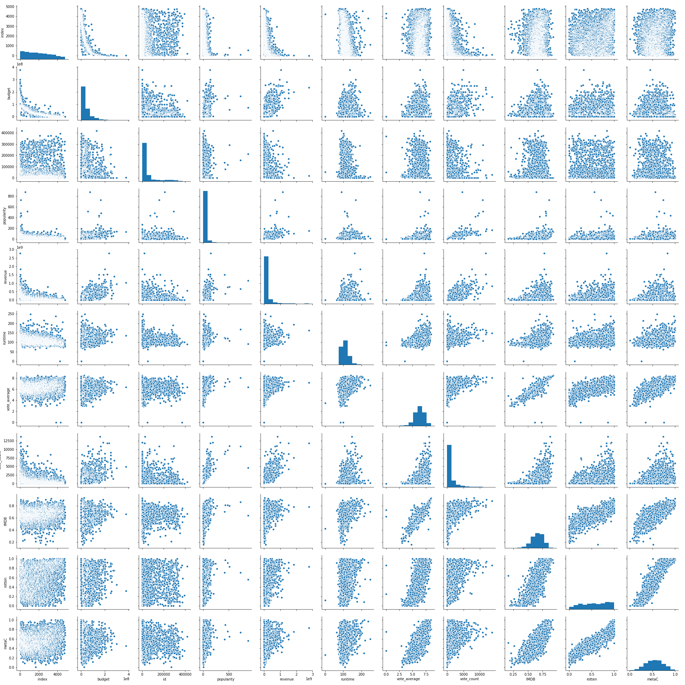

Journey to Find an adequate Movie Profit Prediction
The Countless Hours we spent to finally realize that this was harder than we thought.

Aim: Our goal was to discover and create an algorithm that could predict if a future movie will be profitable.
Data Source: The main data source was a .csv file pulled from Kaggle. It had over 5000 movies. Furthermore, we pulled more data from both online sources Movie Database and OMDB. We also implemented the ability to add movies manually to the database.
Features: The original feature list were split in 2 CSV with the following features:
We ended combining the 2 CSVs files into 1 CSV. The final feature list is as follows:
tmdb_5000_movies:
budget,genres,homepage,id,keywords,original_language,original_title,overview,popularity,production_companies,
production_countries,release_date,revenue,runtime,spoken_languages,status,tagline,title,vote_average,vote_count
tmdb_5000_credits:
movie_id,title,cast (JSON list), crew(JSON list)
Output: The final result would be an estimation of the approximate revenue of what this movie will bring in.
What Happened?
After finding a data source to work with, we went to work cleaning the data. We parsed some data such as eliminating columns of JSON. We eliminated outliers or rows where there was blank fields or fields where there were extreme outliers. We also removed fields that had 0 budget in making movies.
We split the responsibilities between building the linear prediction algorithm and deployment and frontend design. Jamahl and Joseph worked on seeing if they could manipulate data using Python. Joseph has some experience with databases and data analysis but no experience with Python. Jamahl had little to no experience with Python and databases. Jae had a lot of experience with Web Frameworks, Front end design and application deployment.
Linear Regression: We were able to use what we learned in class to begin the process of linear regression.
We also took a slight detour where created a script that added all the reviews for all 5000 movies. The review sources are from Rotten Tomatoes, MetaCritic and IMDB. We did this to find if there was a relationship between the reviews and movie success. Unfortunately, the work was for naught as we found no correlation between the reviews and movie success.
Correlation
{{corr | safe}}
Please pick the independent variable to model:
'budget', 'popularity', 'runtime', 'vote_count', 'monthFact', 'actorFact', 'genFact', 'vote_average', 'IMDB', 'rotten', 'metaC'Our conclusion from this is that there were 3 obscure columns that correlated with higher revenue in movies:
- Budget
- Popularity
- Vote Count
Budget: This is pretty self explanatory and somewhat logical as the higher the budget then there is a correlation that there is higher return.
Popularity: This metric is actually measured by the TMDB (The Movie Database website). So on their website, they measure the number of votes for day, number of views for the day, number of users mark the movie as "favorite" for the day, number of users who added it to their "watchlist" for the day, release date, number of total votes and the previous days score.
Vote Count: The vote count means there is a correlation between the vote count on the TMDB web page and the predicted movie success.
After analysis, we found that the P-Value of each of these were not adequate for analysis. The final graph for the Expected vs Calculated Results also showed a lack of correlation.
{{pVal | safe}}

The next step is to search out for a NonLinear Relationship. We looked for a NonLinear solution hoping for a better result.
NonLinear Approach The NonLinear approach we referenced a website called apmonitor which had an example of NonLinear Regression.

Star Actors/Actresses We were able to pull the data on actors and actresses and specifically their earning power. The process on how we determined this is by count of how many movies they did and also the factor of how much revenue. These 2 factors together allowed us to determine the cutoff on Actors and Actresses. However, we found that there was very little correlation on Actors/Actresses and Revenue. We confirmed this by marking the top 40 actors/actresses and then checking for a correlation.
 actor revenue
actor revenue
Tom Cruise 8463932810
Ian McKellen 8226444997
Robert Downey Jr. 8192023846
Johnny Depp 8040226865
Tom Hanks 7852031825
Genres We were able to determine similarly which Genres are most popular. We took the Popularity metric on TMDB and then did an average of the popularity and also factored in the amount of time the genre popped up on the database. We then went back into the Database and marked off the the Top 5 in the database.
 genre popularity
genre popularity
Adventure 47.856634
Animation 47.795233
Science Fiction 44.961127
Fantasy 44.328318
Action 38.781424
Release Months We also did a study on Release Dates and specifically months. We used the relationship between month and revenue and found that May, July and August were the best months to release a movie. Then we marked any movie with those months as a study for correlation.